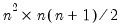
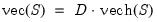
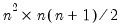
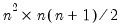

@duplic Matrix Algebra Duplication matrix. Syntax: @duplic(n) n: integer Return: matrix The duplication matrix transforms the half vectorization of a sym matrix to the full vectorization of the matrix. Given the sym matrix , returns the  matrix , which satisfies  Examples sym s1 = @unvech(@mnrnd(15)) vector diff = @vec(s1) - @duplic(s1.@cols) * @vech(s1) demonstrates the properties of the duplication matrix since DIFF equals zero. Cross-references See also @commute, @duplicinv, and @elimin


 sym matrix
sym matrix  , returns the  matrix
, returns the  matrix  , which satisfies
, which satisfies